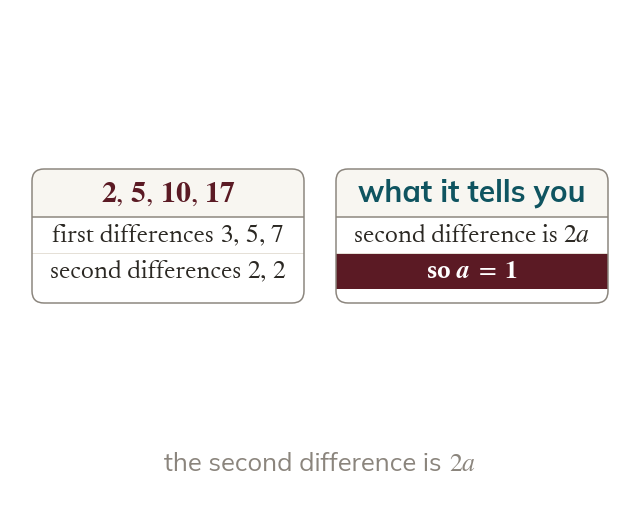

A linear nth term
The common difference is the coefficient of Comparing with the terms shows what to add.
The common difference is the coefficient of so a difference of starts the formula with Comparing with the terms shows what to add on.
A formula for the nth term lets you jump straight to the 100th term, or to the term that equals a target, without writing out the list, and the same difference method reaches quadratic sequences too.
Work down the page at your own pace. Write every answer in your book first, then click to check it.
Read each card, then follow the worked examples one step at a time.
The common difference is the coefficient of Comparing with the terms shows what to add.

Setting the nth term equal to the number gives n. The number is a term only if n is a positive whole number.
Pick an answer. If it's wrong, the feedback tells you which mistake it was.
Section Sequences Exercise questions that find terms from an nth-term formula and find which term meets a condition.
Read each card, then follow the worked examples one step at a time.

In a quadratic sequence, the second differences are constant. The second difference equals So a is half of the second difference.
Subtracting leaves a linear sequence. That gives the rest of the formula. Check with the first two terms.
Pick an answer. If it's wrong, the feedback tells you which mistake it was.
Section Sequences Exercise questions that find the nth term of linear sequences and of quadratic sequences using second differences.
Finished? Next lesson: 4.9 Limiting Value of a Sequence.
Log in, then search for a code to practise that skill.